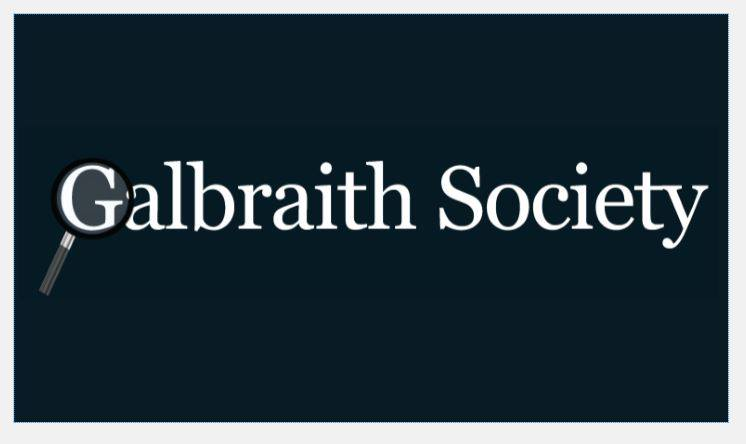

Webmaster - University of Toronto Business Administration
January 2015 - April 2015
Created a new website for them using HTML5, CSS and JS alone. Had discussions on how to make the website more appealing. Continually updated the website. Made changes in the looks of the website based on feedback from executive team. For instance, added a slider with pictures of events in the first week.
January 2015 - April 2015
Created a new website for them using HTML5, CSS and JS alone. Had discussions on how to make the website more appealing. Continually updated the website. Made changes in the looks of the website based on feedback from executive team. For instance, added a slider with pictures of events in the first week.

Research Experience (REX) Co-Director - Galbraith Society
June 2015 - April 2015
Planned REX events, talked with various engineering professors about their research, created and evaluated applications for REX, advertised Galbraith Society Journal, encouraged research participations and organized REX closing ceremony.
June 2015 - April 2015
Planned REX events, talked with various engineering professors about their research, created and evaluated applications for REX, advertised Galbraith Society Journal, encouraged research participations and organized REX closing ceremony.
Member - University of Toronto Public Speaking Club
June 2015 - January 2016
Gave impromptu speeches in front of around twenty people. Participated in various events like interview prep, staring contests, speaking gestures preparation, etc.
June 2015 - January 2016
Gave impromptu speeches in front of around twenty people. Participated in various events like interview prep, staring contests, speaking gestures preparation, etc.

Web Developer - Platform for Finding Restaurants/Stores
November 2015 - Present
Working in a team of four on this project assigned by a computer science professor at University of Toronto Developing an online platform to discover restaurants using Python.
November 2015 - Present
Working in a team of four on this project assigned by a computer science professor at University of Toronto Developing an online platform to discover restaurants using Python.